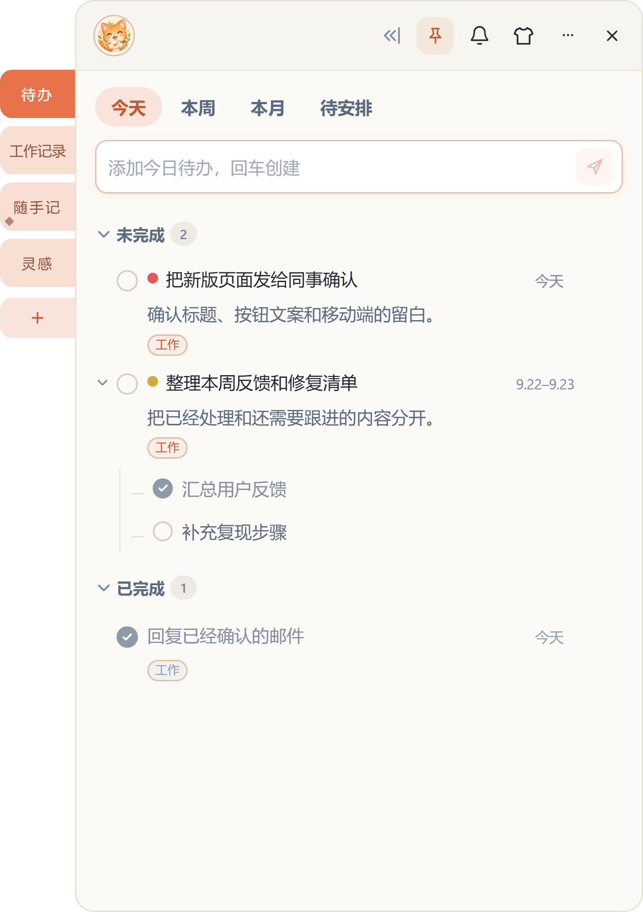

01
今天、本周、本月，安排清楚
按时间查看待办，未安排的事也有独立入口；过期事项可以一键安排到今天。
Windows 7 / 10 / 11 · macOS
把今天的事贴在桌面边缘。需要时展开，忙碌时安静收起，让记录更近，让注意力留给正在做的事。
麒麟 KYLIN / 统信 UOS
对应版本优化中
Android、鸿蒙手机版的正式版本准备中，发布后将在这里提供下载。

刚刚好的功能
围绕每天真正会用到的记录、安排和提醒设计，不把复杂项目管理塞进你的桌面。
01
按时间查看待办，未安排的事也有独立入口；过期事项可以一键安排到今天。
02
子任务可以独立完成、设置日期和提醒，复杂事项也能轻松推进。
03
支持具体分钟和稍后提醒，不让重要事项被安静地忘掉。
04
把临时想法、会议片段和截图放在同一张便签里，双击图片即可专注预览。
05
多套风格自由切换，也能调节面板透明度，让它更自然地融入桌面。
真实界面
待办、周视图和便签采用同一套视觉语言，在有限的面板里保持清晰。


桌面工作节奏
待办贴不要求你先整理出完整计划。一个念头出现时先记下，稍后再安排日期、提醒和子任务。
常见问题
待办和便签默认保存在当前电脑的本机数据目录中。重要内容建议定期通过应用内“数据”页面导出备份。
当前提供 Windows 10 / 11（64 位）独立安装包，以及 Mac 的 Apple 芯片（M 系列）和 Intel 芯片两种 DMG 安装包。Windows 7、麒麟和统信 UOS 对应版本优化中。
下载 Mac 版 DMG，打开后将“待办贴”拖入“应用程序”，再从“应用程序”启动。下载前请在苹果菜单的“关于本机”中查看芯片或处理器：M 系列选择 Apple 芯片版，Intel 处理器选择 Intel 芯片版。下载区的安装流程 PDF 为 Windows 版说明。
对应版本优化中
正常覆盖安装不会清除本机数据。重要内容仍建议定期通过应用内“数据”页面导出保存。
当前处于免费公测阶段。未来如调整为订阅服务，会提前向用户说明。